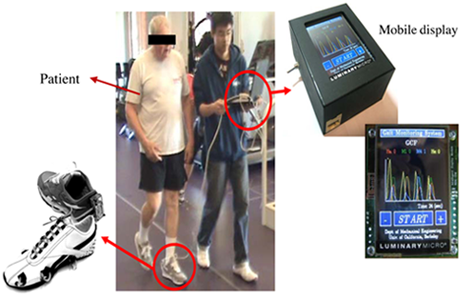
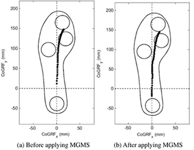

<!DOCTYPE html PUBLIC "-//W3C//DTD XHTML 1.0 Transitional//EN" "http://www.w3.org/TR/xhtml1/DTD/xhtml1-transitional.dtd">
<html xmlns="http://www.w3.org/1999/xhtml" lang="en" xml:lang="en">
<head>
	<meta http-equiv="content-type" content="text/html; charset=utf-8" />
	<meta name="description" content="MSC Lab Homepage" />
	<meta name="keywords" content="mechanical,systems,control" />
	<meta name="author" content="Raechel Tan" />
    <link rel="icon" href="../../../mscicon.ico" />
    <link href='http://fonts.googleapis.com/css?family=PT+Sans|Brawler' rel='stylesheet' type='text/css' />
	<link rel="stylesheet" type="text/css" href="../../../style.css" media="all" />
	<title>MSC Lab - Development of Smart Shoes</title>
</head>

<body>
<div id="container980"><!-- Use"containerfull" for 100% width. For fixed width, use "container980", "container760" or "container600" (the number is the layout width in pixels). -->
	<div id="header">
    	
	</div>
	<div id="menu"> 
		<ul>     
			<li><a href="../../../index.html">Home</a></li>
			<li><a href="../../../people.html">People</a>
            	<ul>
                	<li><a href="../../../people/tomizuka.html">Prof. Masayoshi Tomizuka</a></li>
                    <li><a href="../../../people/students.html">Students</a></li>
                    <li><a href="../../../people/visitors.html">Visitors</a></li>
                    <li><a href="../../../people/alumni.html">Alumni</a></li>
                    <li><a href="../../../people/prev_visitors.html">Previous Visitors</a></li>
                </ul>
            </li>
			<li><a class="current" href="../../../research.html">Research</a>
            	<ul>
                	<li><a href="../../robotics.html">Robotics</a></li>
                    <li><a href="../../human.html">Human Mechatronics</a></li>
                    <li><a href="../../disk.html">Hard Disk Drive Control</a></li>
                    <li><a href="../../precision.html">Precision Motion Control</a></li>
                    <li><a href="../../automotive.html">Automotive Control Systems</a></li>
                    <li><a href="file:///C|/Users/Raechel 2/Dropbox/research.html">more...</a></li>
                </ul>
            </li>
            <li><a href="../../../publications.html">Publications</a>
            	<ul>
                	<li><a href="../../../publications/papers_robotics.html">Robotics</a></li>
                    <li><a href="../../../publications/papers_human.html">Human Mechatronics</a></li>
                    <li><a href="../../../publications/papers_disk.html">Hard Disk Drive Control</a></li>
                    <li><a href="../../../publications/papers_precision.html">Precision Motion Control</a></li>
                    <li><a href="../../../publications/papers_automotive.html">Automotive Control Systems</a></li>
                    <li><a href="../../../publications.html">more...</a></li>
                </ul>
            </li>
            <li><a href="../../../resources.html">Resources</a>
            	<ul>
                	<li><a href="../../../resources/news.html">News and Announcements</a></li>
                    <li><a href="../../../resources/network.html">Network and Printing</a></li>
                    <li><a href="../../../resources/courses.html">Prof. Tomizuka's Courses</a></li>
                    <li><a href="../../../resources/conferences.html">Upcoming Conferences</a></li>
                </ul>
            </li>
            <li><a href="../../../misc.html">Miscellaneous</a>
            	<ul>
                	<li><a href="../../../misc/logo.html">MSC Logo</a></li>
                    <li><a href="../../../misc.html">more...</a></li>
                </ul>
            </li>
            <li><a href="../../../contact.html">Contact Us</a></li>
		</ul>
	</div>

	<div id="main">
    	<div id="navtree">
			<p><a href="../../../research.html">Research</a> &gt; <a href="../human.html">Human Mechatronics</a> &gt; <a href="human_assist.html">Mechatronics for Human Assistance</a> &gt; <a href="human_assist_shoes.html">Development of Smart Shoes</a></p>
		</div>
    
		<div id="content">
        	<div id="sidebar">
			<div class="sidebarbox">
               <h3>Contents:</h3>
				<ul class="sidemenu">
					<li><a href="#motivation">Motivation and Approach</a></li>
                    <li><a href="#results">Main Results</a></li>
                    <li><a href="#pub">Recent Key Publications</a></li>
				</ul>
			</div>
			</div>

          <h2>Development of Smart Shoes</h2>
		  <h3 id="motivation">Motivation and Approach</h3>
		  <p>In the NMAS, gait analysis is employed as the major approach of disease diagnosis and evaluation. To provide accurate gait detection, four air pressure sensors were embedded in a shoe to measure ground reaction force (GRF). Based on raw force measurements, fuzzy logic was employed to estimate the current gait phase [1]. A mobile gait monitoring system (MGMS) was developed to provide real-time visual feedback to patients for gait correction. Clinical tests were run with patients at the UCSF rehabilitation clinic.</p>
		  <table width="100%" border="0">
		    <tr>
		      <td width="55%" align="center"><br />&nbsp;</td>
		      <td width="45%" align="center"><br />&nbsp;</td>
	        </tr>
	      </table>
		  <p align="center"><strong>Clinical test of the MGMS</strong> (Left: the MGMS in a clinical test; Right: result of the clinical test)</p>
		  <p>&nbsp;</p>
		  <h3 id="results">Main Results</h3>
		  <p>The smart shoes could provide real-time and accurate gait phase detection. With the help of visual feedback from the MGMS, all patients had improvement on their walking paern in the clinical tests. The above results show the temporal track of the center of ground reaction force (CoGRF) [2].</p>
		  <p>&nbsp;</p>
		  <h3 id="pub">Recent Key Publications</h3>
		  <ol>
		    <li>K. Kong, and M. Tomizuka, &quot;A Gait Monitoring System Based on Air Pressure Sensors Embedded in a Shoe,&quot; <em>IEEE/ASME Transactions on Mechatronics</em>, vol. 14, no. 3, pp. 359-370, 2009</li>
		    <li>J. Bae, K. Kong, N. Byl and M. Tomizuka, &quot;A Mobile Gait Monitoring System for Abnormal Gait Diagnosis and Rehabilitation: A Pilot Study for Parkinson Disease Patients,&quot; <em>ASME Journal of Biomechanical Engineering</em>, vol. 133, no.4, pp. 041005, 2011</li>
	      </ol>
      </div>
		<div class="clear">&nbsp;</div>
	</div>

	<div id="credits">
		<p>&copy; 2015 Mechanical Systems Control Laboratory &nbsp;&nbsp; | &nbsp;&nbsp; <a href="mailto:dwai213@berkeley.edu" target="_blank">Contact the Webmaster</a></p>
	</div>
</div>
</body>
</html>